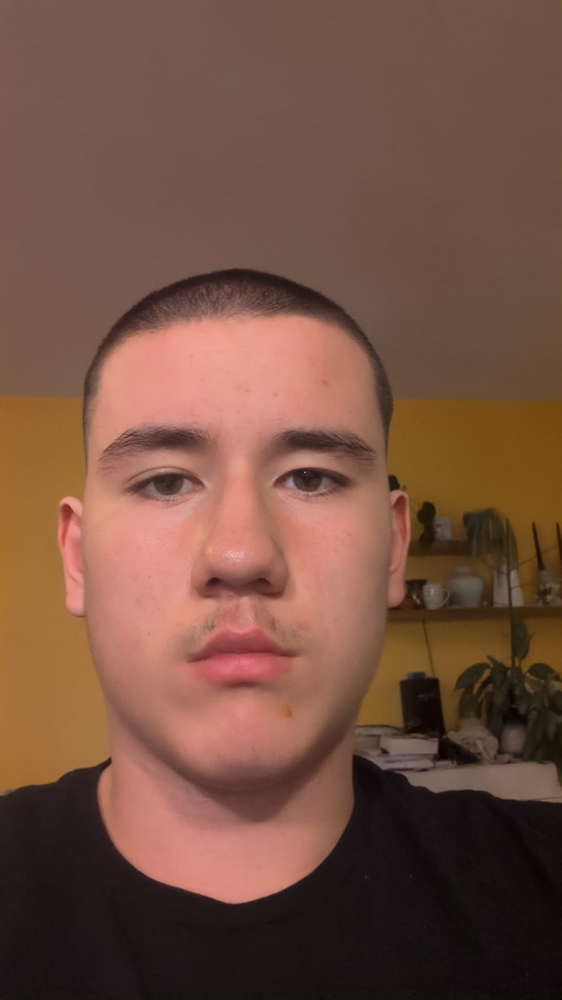
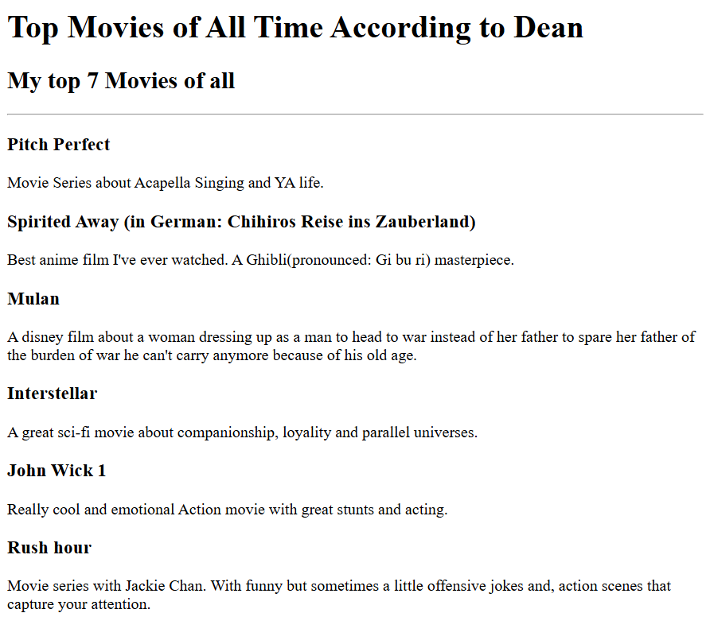
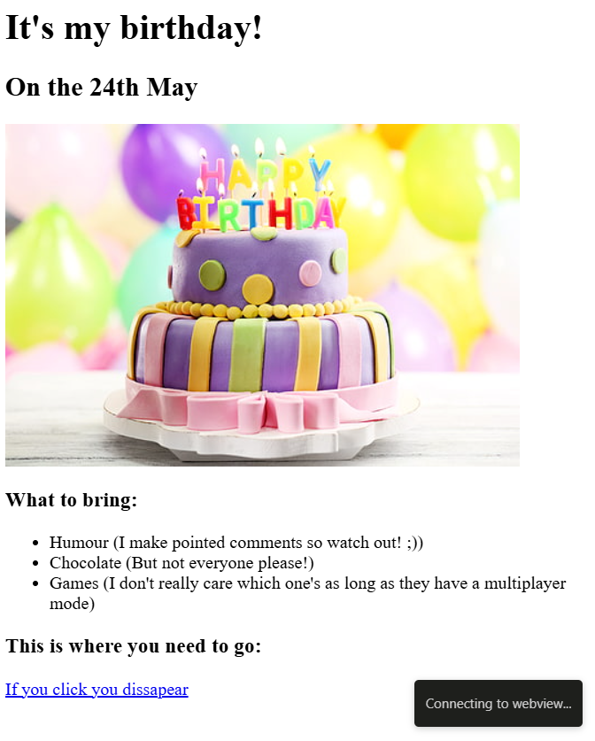

Dean Chen-Blesic
I'm a Web Developer among other things

I'm currently a full stack and web developer in training and I'm
pursuing my ambitions of aquiring the needed qualifications for the
career I want to pursue.
My projects


Elementary school: GTVS Alterlaa
Middle school: BRG12 Rosasgasse
Highschool/Current School: HBTLUVA TGM
Work experience: none
Excellent problem solving skills
endurant
motivated
Other certifications or awards:
none(except the excellent success award in high school)
About me Contact me
Copyright © 2025 Dean Chen-Blesic. All rights reserved.